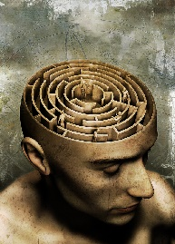

uMtMu
Table of Contents
- 1. Yazılar
- 1.1. Bazen pencereden atlayıp uçup gidesim geliyor
- 1.2. Bazen kendimden nefret ediyorum.
- 1.3. Beyin uyuşması
- 1.4. İsteksizlik -> Gereklilik -> Kararsızlık -> Geçici Felç!
- 1.5. Sığır seçmene, Seçme Sığır
- 1.6. Hayat akıp gidiyor
- 1.7. Bilmezlik
- 1.8. Saygı, Saygısızlık, Saygılılık [Doldurulacak]
- 1.9. Öküz evlatları
- 1.10. Ne yaptığım hakkında bir fikrim yok
- 1.11. Where is my mind?
- 1.12. Her şeyden tırsar oldum
- 1.13. ınsanlığın son bulacağı nokta
- 1.14. Kadın ve Erkek
- 1.15. İstiyorum - 2
- 1.16. Jump To Hyperspace
- 1.17. İstiyorum - 1
- 1.18. Düşünceler
- 1.19. Ne yapsam bilmiyorum?
- 1.20. Yalnızlığın yüzleri
- 1.21. Oh ne ala memleket?
- 1.22. Ben niye buradayım?
- 2. Bağlantılar

1 Yazılar
1.1 Bazen pencereden atlayıp uçup gidesim geliyor
1.2 Bazen kendimden nefret ediyorum.
Bazen kendimden nefret ediyorum. Başka insanların yaptıklarını, tanıdığım
insanların ne yaptıklarını görüyorum ve kendime kızıyorum nefret ediyorum.
Fuck you!!
1.3 Beyin uyuşması
Ne yapacağımı bilmiyorum. Olduğum halden çıkmak için ne yapmak gerekir
bilmiyorum. Belki de bir süre böyle durmalıyım ama iş yerinden böyle durmak
tehlikeli olabilir.
1.4 İsteksizlik -> Gereklilik -> Kararsızlık -> Geçici Felç!
1.5 Sığır seçmene, Seçme Sığır
Başımıza yönetici, karar verici olarak öyle ahlaksız, karaktersiz
vb. insanları seçmiş olduğumuzu görmek. Siyasetin varlığı, adeta ahlaksızlığın,
karaktersizliğin taçlandırılması. Böyle bir dünyada nasıl yaşayabiliyoruz?
1.6 Hayat akıp gidiyor
Hayat akıp gidiyor. Her an içimizde bir sürü ölüm ve doğum
oluyor. Çevremizdeki büyük ölümler bizi çok üzüyor ama içimizdeki ölümlere
karşı daha umursamaz davranıyoruz. Kimi farkında değil, kimi farkında ama
umursamıyor. Hücreler ölüyor, duygular ölüyor, düşünceler ölüyor.
1.7 Bilmezlik

Bir bilmezlik hali içindeyim. Şu anda nasıl bir konumda olduğumu
bilmiyorum.
Aslında bir çok insan bilmezlik halinde. Kendimizi ne kadar
biliyoruz. Belki de kullandığım bilgisayarı, kendimi bildiğimden daha iyi
biliyorum. İnsanın ucunu bucağını bilmek mümkün mü?
Sınırlı varlıklar olduğumuzu düşünüyorum. Aslına bakarsanız çoğu şey
sınırlı. Sadece gezip göremediğimiz yerleri var insanın. Orada insan
kalmayana kadar yürüyemedik belki de. İnsandan aşağı ya da yukarı
bakamadık. İnsanın ötesinde ne var? Insan sürekli genişleyen bir varlık mı?
Yoksa sadece yeni şeyler öğrendiğimiz için genişlediğimizi mi
düşünüyoruz. Belki de insan, içinde sonsuza değin dönüp duracağın bir labirent…
1.8 Saygı, Saygısızlık, Saygılılık [Doldurulacak]
1.9 Öküz evlatları
Evrim teorisine inanıyorum ama insanın atasının maymun olduğunu
düşünmüyorum. Bence insan doğrudan öküzden evrilmiş. Bazı insanlar evrim
geçirip maymuna evriliyor.
1.10 Ne yaptığım hakkında bir fikrim yok
Cidden 3 haftadır ne yaptığım konusunda neredeyse hiç bir fikrim yok. Sanırım
beynim "Yeter amk!" sinyalleri veriyor. İşin kötüsü ne yapmam gerekiyor onu
da bilmiyorum. Bir süredir, hiç bir şey yapmamayı deniyorum. Lakin bunda da
pek başarılı olduğum söylenemez. Kurtarıcı olarak gördüğüm ve dört gözle
beklediğim hafta sonları yardımcı olmuyor. Ne yapacağımı
bilmiyorum. Bilgisayarım nerede kaldı?
1.11 Where is my mind?
{kind=link}
1.12 Her şeyden tırsar oldum
O kadar düşünemiyorum ki her şeyden tırsar oldum. Acaba her şey ayrı mı yazılıyordu?
1.13 ınsanlığın son bulacağı nokta
Bence insanlığın son bulacağı nokta, dikkatini tamamen faydasız olan şeylere
odakladığı noktadır. O anda insanlık fiilen olmasa da zihnen yok olacaktır.
1.14 Kadın ve Erkek
Karısını döve döve öldüren adam, 13 ay ceza alıp yattığı süre göz önünde
bulundurularak serbest bırakılmış. Tecavüzcüsünü öldüren kadına müebbet hapis
cezası verilmiş.
Burada iki nokta var.
- Kadın ve Erkek konusunda eşitsizlik
- Elde edilen bilgiye olan güvensizlik
1.15 İstiyorum - 2
Yazar olmak istiyorum. Köşe yazıları, kitaplar yazmak istiyorum. Ama ortalıkta
olmak istemiyorum. Yüzüm görünsün istemiyorum.
1.16 Jump To Hyperspace
Sanırım böyle bir atlayışa ihtiyacım var. Kafamdaki sorunları çözemiyorum.
1.17 İstiyorum - 1
Programlama dilleri ile ilgilenmek, farklı paradigmaları araştırmak kullanmak
istiyorum.
Avcılar ve atıcılar derneğine Atıcı olarak kayıt olmak, ara sıra atıcılık
yapmak istiyorum.
1.18 Düşünceler
Bu sabah işe 1030 gitmem gerekirken 0830 da gitti. Bunu iskelede fark
ettim. Bari güzel bir kahvaltı yapayım dedim. Kahvaltımı alıp kasaya yakın bir
masaya oturdum. Tabi bilinçli olarak değil. Sadece dışarıda yer olmadığı
için. ıçeri giren iki kişi dikkatimi çekti. Giyimleri ve duruşları diğerlerine
göre farklıydı. ılk düşüncem giyimlerinden dolayı kasıntı olduklarını
düşünmemdi. Asıl ilgimi çeken adamlardan birisinin nasıl sipariş verdiği
idi. "2 boyoz istiyorum" dedi. Diğerleri nasıl sipariş veriyor diye
dinledim. Neredeyse herkes "2 boyoz alayım" dedi. Sonra dükkana geldim. Dün
akşamdan beri düşündüğüm bir konuya programlama dili paradigmalarına tekrar
bakayım dedi. ışte o an ne "istediğimi" ve ne "aldığımı" anladım.
1.19 Ne yapsam bilmiyorum?
Hayatımda ne yapacağımı bilmediğim bir sürü zaman oldu. Şimdi ne yapacağımı
düşünüyorum. Şu anda ne olduğunu da bilmiyorum. Tek bildiğim şey şu gibi bir
şey de söyleyemiyorum.
1.20 Yalnızlığın yüzleri
Bazen yalnız olmanın güzel olduğu zamanlar oluyor. Sizi tutan birisi
olmasındansa yalnızlığın özgürlüğünü hissetmek.
(Cum Haz 12 10:35:17 Türkiye Yaz Saati 2015)
1.21 Oh ne ala memleket?
Sen düşün düşün, sonra eyleme geçen alıp gitsin. Ne ala memleket!!
1.22 Ben niye buradayım?
Adamı olmayacak yere koyarsan o da sana sorar.